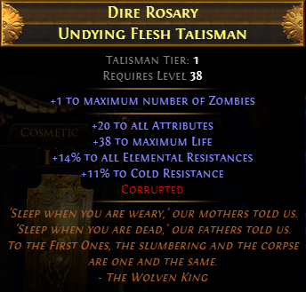

9) Undying Flesh Talisman 목걸이

최대 좀비의 숫자를 1 늘려줍니다만, 몬트레굴을 착용해서 이것만 가지고는 늘릴 수가 없습니다.
이에 대한 해결책 중 하나가 좀비+스켈 숫자를 1씩 늘려주는 크래프팅 프리픽스 모드가 있는데,
갑옷과 헬멧에 붙일 수 있습니다.
Undying Flesh Talisman 효과를 보고 싶으면 갑옷에 크래프팅까지 해서 좀비 6마리 스켈레톤 12마리를 만들거나,
아니면 그냥 아무 적당한 목걸이 사서 좀비 5마리를 쓰시면 됩니다.
-----------------------------------------
19.6.3 수정사항
기존 설명이 말로만 해서 어려운 것 같아서 간단한 수식으로 준비했습니다.
① Talisman 목걸이 X, 갑옷 좀비 크래프팅 X
좀비 10 * 0.5 = 5마리
② Talisman 목걸이 또는 갑옷 좀비 크래프팅 中 1
좀비 11 * 0.5 = 5.5 → 5마리(소수점 버림)
③ Talisman 목걸이 + 갑옷 좀비 크래프팅
좀비 12 * 0.5 = 6마리